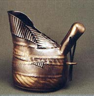

| GLAZE RECIPES Cone 5-6 Electric
Barbara Hanselman, Claysmith
The following recipes have kindly been put together by Barbara
Hanselman, Cherry Hill, NJ, USA.
XAVIER’S WARM JADE GREEN - A food safe
semi-matte, butter finish glaze.
You can vary the Copper Carbonate from 3-5% with great results
and still be food safe.
SAPPHIRE BLUE - a Ron Roy reformulated
recipe which breaks nicely on edges.Breaks green on light clay
bodies, black on dark clay bodies.Apply medium to heavy.Good
for functional and decorative ware.
-
Frit 3134..........
.37.0%
-
EPK.............26.0%
-
Silica 325..........17.0%
-
Strontium Carbonate.....
4.0%
-
Custer Feldspar ........16.0%
CURRIE BLUE - A butter finish matte which has a lot
of interest, breaks nicely and holds it’s own on all clay bodies.Very opaque but with interest.
-
Ferro Frit 3134............
10.0%
-
Nepheline Syenite.........65.0%
-
Strontium Carbonate........23.0%
-
Lithium Carbonate.........
2.0%
-
Copper Carbonate..........4.0%
-
Cobalt Carbonate......... 0.15%
-
Bentonite.............2.0%
-
Brushing Medium.........1.8% [add only if brushing on]
BACH’S BLUE GREEN- A glossy semi-transparent
glaze which holds on even the darkest clay bodies.Overlays well
with Randy’s Red; great over blue, green & red oxide stains.
-
G200 Feldspar..........27.00%
-
Silica 325 [flint]..........
20.25%
-
Whiting..............
20.25%
-
Ball Clay [OM4].........
10.25%
-
Gerstley Borate.......... 9.00%
-
Zinc Oxide............. 6.75%
-
Soda Ash.............
6.50%
-
Zircopax.............. 6.00%
-
Copper Carbonate......... 6.00%
-
Bentonite............... 2.00%
-
Brushing Medium..........
1.80% [add only if brushing on]
WEATHERED BLUE - a true weathered looking
glaze from Pete Pinnell.
-
Nepheline Syenite.........40.0%
-
Dolomite.............18.0%
-
Silica 325...............
18.0%
-
EPK.....................12.0%
-
Bone Ash...............6.0%
-
Lithium Carbonate..........4.0%
-
Zinc Oxide.............4.0%
-
Copper Carbonate..........2.0%
-
Cobalt Carbonate.........
0.25%
-
Bentonite.............2.0%
-
Brushing Medium.........
1.2% [add only if brushing]
LYNN’S GLOSSY GREY & LIGHT BLUE GREEN - A glossy glaze with a lot of movement.Looks best on textured surfaces
or over engobes with red iron and red iron oxide stains.
-
Gerstley Borate.......
50.0%
-
Silica 325..........
30.0%
-
EPK.............
15.0%
-
Titanium Dioxide........5.0%
-
Soda Ash...........2.5%
-
Copper Carbonate.........2.0%
-
Red Iron Oxide........1.0%
-
Cobalt Carbonate.......0.75%
STRONTIUM WEATHERED BRONZE AND WASHED
DENIM BLUE - a great weathered-looking glaze.The bronze
goes from a clear, bright green to a brownish bruised green and
is suited to all clay body colors, although it is best on tans.The denim blue is not tested.
-
Lithium Carbonate......
1.0%
-
Strontium Carbonate......20.0%
-
Nepheline Syenite.......60.0%
-
KYOM 4...........10.0%
-
Silica 325..........
9.0%

FOR WEATHERED BRONZE ADD:
-
Titanium Dioxide.......5.0%
-
Copper Carbonate......5.0%
-
Bentonite...........2.0%
-
Brushing Medium.......1.8%
FOR WASHED DENIM BLUE ADD:
-
Cobalt carbonate.......0.15%
-
Copper Carbonate......4.0%
-
Bentonite..........2.0%
-
Brushing Medium......1.8%
STRONTIUM TURQUOISE MATTE Cone 5 -
The ingredients in this glaze are the same as the ones in Strontium
Weathered Bronze; only the amounts vary slightly.A beautiful
matte turquoise glaze!
-
Nepheline Syenite.........60%
-
Strontium Carbonate........25%
-
Lithium Carbonate.........2%
-
EPK....................4%
-
Silica 325..............9%
-
Copper Carbonate..........4.0%
-
Bentonite............2.0%
-
Brushing Medium........1.8%
TECO GREEN - A Tom Zwierlein matte glaze based on
a Val Cushing recipe.Reminiscent of the green to grey glaze found
on American Art Pottery known as Tecoesque.Really greys out to
an ugly color on white stoneware if applied too thick but holds
it’s own on other clay bodies [from tans to reds to browns] producing
different, interesting effects.
-
Tin Oxide..........6.0%
-
Black Copper Oxide.....4.0%
-
Red Iron Oxide.........0.5%
-
Bentonite............2.0%
-
Brushing Medium.......1.8%
METALLIC
GREEN - This metallic luster glaze looks awesome on clays with
iron - Laguna’s Electric Brown, Hawaiian and Standard’s 266 Brown
or over engobes or stains made from red iron oxide.Both the Sky
Blue and Ocean variations also produce metallic lusters and look
best on iron rich clays, stains and engobes. Three brushed-on
coats really cover well; if more translucency is desired, one
heavy or two lighter coats do the trick.
BASIC RECIPE
 METALLIC
GREEN - METALLIC
GREEN -
ADD Colorants:
Using the basic recipe for Metallic Green above but changing
colorants will give you these recipes
METALLIC SKY BLUE -
ADD Colorants:
METALLIC OCEAN -

ADD Colorants:
-
Tin Oxide............7.0%
-
Copper Carbonate.........4.0%
-
Cobalt Carbonate.........
1.0%
RANDY’S RED & BLUE - a glossy,
translucent glaze which works better as a liner or “inside” glaze.The red goes very orange if re-introduced to a bisque firing after
a cone 5-6 firing.The blue is very lavender with specs from the
cobalt oxide.Apply medium to heavy, especially outside.Can be
runny.
-
Red Iron Oxide........15.0%
-
Bentonite...........
2.0%
-
Brushing Medium.......1.2% [add only if brushing]
BLACK GOLD MATTE - A great bronze black metallic for all clay
bodies at cone 5-6; apply medium.

-
Redart...........
49.0%
-
Manganese Dioxide.....36.5%
-
OM4 Ball Clay.......4.0%
-
Silica 325 [flint]........4.0%
-
Black Copper Oxide.....4.0%
-
Cobalt Oxide........2.5%
-
Bentonite...........2.0%
-
Brushing Medium......1.8%
This is my favorite of the golden bronze looking glazes!
BRONZE - Bill Shillalie’s version for
cone 02-6.This recipe is so similar to my favorite above that
I decided to hold on to it and test it one of these days.The
other two are more options.
-
Red Art............46.0%
-
Manganese Dioxide......35.0%
-
OM4 Ball Clay.......
4.0%
-
Silica 325..........
4.0%
-
Black Copper Oxide.....
4.0%
-
Cobalt Oxide........2.0%
-
Red Iron Oxide.......
2.0%
-
Dark Rutile.........3.0%
-
Red Art ............48.0%
-
KYOM4 Ball Clay......
4.0%
-
Silica 325........... 4.0%
-
Manganese Dioxide.......36.0%
-
Gerstley or Laguna Borate
... 8.0%
[Used by Virginia Scotchie]
BRONZE 3
-
Red Art............60.0%
-
KYOM4 Ball Clay......
5.0%
-
Silica 325...........5.0%
-
Manganese Dioxide........45.0%
- Gerstley or Laguna Borate....30.0%
- Cobalt Carbonate........
5.0%
- Copper Carbonate.......
5.0%
PERKIN’S MATTE BLACK - A matte gunmetal
black which stays put - great for wax resist design work.This
glaze works on all clay bodies but tends to pinhole if too thick.
-
Nepheline Syenite......76.3%
-
EPK............
4.8%
-
Whiting..........
5.3%
-
Gerstley Borate........10.4%
-
ADD Colorants:
-
Copper Carbonate......4.0%
-
Manganese Dioxide......4.0%
-
Cobalt Oxide........2.0%
More Articles
|